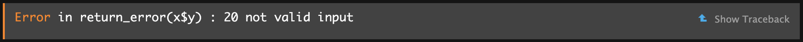
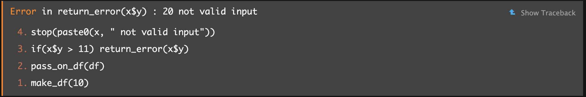

# Get started
set.seed(1234)
library(dplyr)Writing working code—and debugging it
Two important error messages
> Error in [insert some code] : ! argument is of length zero
x <- c(1, 2, 3)
x[0]numeric(0)if (x[0]>2) print(x)Error in `if (x[0] > 2) ...`:
! argument is of length zeroThis means that some object you tried to work with was empty; it simply didn’t exist as you thought or didn’t contain anything. In the above case, the vector x does not have an “index 0” to subset (fun fact: in most other languages, the first position of a list-like object is position 0).
> object of type ‘closure’ is not subsettable
printer <- data.frame(size = c(1, 2, 3), color = c("red", "orange", "blue"))
printer[1,] # works fine size color
1 1 redprint[1,] # the print function is the here object of type 'closure'Error in `print[1, ]`:
! object of type 'closure' is not subsettableYou wanted to subset an object, but you accidentally tried to subset a function; in this case, the print() function.
First steps when encountering an error message
Check the error message carefully! Sometimes the error message tells you which file and line number the error occurred on.
- Look it up
- Have you tried a fresh session?
Debugging and sanity checks - useful before errors even occur
Use the scientific method
Go through everything - line by line. For each segment of code, form hypotheses as to what the output for a given input should be. This might quickly prove you wrong and expose disagreement between code purpose and function.
Print debugging
Check intermediate results.
Use some of the following summary functions for data structure and content:
# Let's look at the mtcars dataset
mtcars <- mtcars |> mutate(col = sample(c("orange", "blue", "white", NA_character_),size=nrow(mtcars), replace=T))
mtcars |> head(4) |> gt::gt()| mpg | cyl | disp | hp | drat | wt | qsec | vs | am | gear | carb | col |
|---|---|---|---|---|---|---|---|---|---|---|---|
| 21.0 | 6 | 160 | 110 | 3.90 | 2.620 | 16.46 | 0 | 1 | 4 | 4 | NA |
| 21.0 | 6 | 160 | 110 | 3.90 | 2.875 | 17.02 | 0 | 1 | 4 | 4 | NA |
| 22.8 | 4 | 108 | 93 | 3.85 | 2.320 | 18.61 | 1 | 1 | 4 | 1 | blue |
| 21.4 | 6 | 258 | 110 | 3.08 | 3.215 | 19.44 | 1 | 0 | 3 | 1 | blue |
Check for NAs
Always a good place to start. NAs are where good intentions in data management go to die. Make sure you ALWAYS know how many NAs there are—and how many there should be.
# Check if NA - get a vector of TRUE/FALSE values, one for each row of the data in column col:
is.na(mtcars$col) [1] TRUE TRUE FALSE FALSE FALSE TRUE FALSE FALSE FALSE FALSE TRUE TRUE
[13] FALSE FALSE FALSE FALSE FALSE FALSE FALSE TRUE FALSE FALSE TRUE FALSE
[25] TRUE TRUE FALSE TRUE TRUE TRUE FALSE TRUE# Get totsl number of NAs in the column:
is.na(mtcars$col) |> sum()[1] 13
Summarise a dataset
Let’s now get summary data for every variable in the dataset. While summary() provides a decent overview, the describe() function from Harrell’s {Hmisc} package is far more detailed.
# Summarise data
mtcars |> select(c(mpg, vs, col)) |> summary() mpg vs col
Min. :10.40 Min. :0.0000 Length:32
1st Qu.:15.43 1st Qu.:0.0000 Class :character
Median :19.20 Median :0.0000 Mode :character
Mean :20.09 Mean :0.4375
3rd Qu.:22.80 3rd Qu.:1.0000
Max. :33.90 Max. :1.0000 mtcars |> select(c(mpg, vs, col)) |> Hmisc::describe()select(mtcars, c(mpg, vs, col))
3 Variables 32 Observations
--------------------------------------------------------------------------------
mpg
n missing distinct Info Mean pMedian Gmd .05
32 0 25 0.999 20.09 19.6 6.796 12.00
.10 .25 .50 .75 .90 .95
14.34 15.43 19.20 22.80 30.09 31.30
lowest : 10.4 13.3 14.3 14.7 15 , highest: 26 27.3 30.4 32.4 33.9
--------------------------------------------------------------------------------
vs
n missing distinct Info Sum Mean
32 0 2 0.739 14 0.4375
--------------------------------------------------------------------------------
col
n missing distinct
19 13 3
Value blue orange white
Frequency 11 4 4
Proportion 0.579 0.211 0.211
--------------------------------------------------------------------------------
Relations among variables
Now we’ll turn our attention to looking at relations among multiple variables. A simply way is to form a 2x2 (or for categories with >2 levels, a pxq) table:
with(mtcars, table(cyl, gear)) gear
cyl 3 4 5
4 1 8 2
6 2 4 1
8 12 0 2
summarise()
summarise() from {dplyr} creates a new dataset with variables calculated within whatever groups were provided (note: this does not retain anything else in the original dataset)
mtcars |> group_by(cyl) |> dplyr::summarise(mean_mpg = mean(mpg, na.rm=T),
min_mpg = min(mpg, na.rm=T),
max_mpr = max(mpg, na.rm=T))# A tibble: 3 × 4
cyl mean_mpg min_mpg max_mpr
<dbl> <dbl> <dbl> <dbl>
1 4 26.7 21.4 33.9
2 6 19.7 17.8 21.4
3 8 15.1 10.4 19.2
Make a Table1
Finally, sometimes it’s nice to just get a full overview of the data, as it will look in a Table1:
mtcars |> select(c(mpg, cyl, disp, col)) |>
gtsummary::tbl_summary(by = cyl,
statistic = list(mpg ~ "{mean} (SD: {sd})"),
missing_text = "Missing")| Characteristic | 4 N = 111 |
6 N = 71 |
8 N = 141 |
|---|---|---|---|
| mpg | 26.7 (SD: 4.5) | 19.7 (SD: 1.5) | 15.1 (SD: 2.6) |
| disp | 108 (79, 121) | 168 (160, 225) | 351 (301, 400) |
| col | |||
| blue | 3 (43%) | 2 (100%) | 6 (60%) |
| orange | 3 (43%) | 0 (0%) | 1 (10%) |
| white | 1 (14%) | 0 (0%) | 3 (30%) |
| Missing | 4 | 5 | 4 |
| 1 Mean (SD: SD); Median (Q1, Q3); n (%) | |||
Advanced functionality: when you see an error
The call tree
Here’s some code. The functions are irrelevant, expect make_df() takes an input, passes something on to pass_on_df(), which (conditionally) calls the return_error() function. When you use make_df(), you might not realise all of this is happening behind the scenes.
make_df <- function(x) {
df <- data.frame(y=x+10)
pass_on_df(df)
}
pass_on_df <- function(x) {
# ...
if(x$y > 11) return_error(x$y)
}
return_error <- function(x) {
stop(paste0(x, " not valid input"))
}
make_df(10)Error in `return_error()`:
! 20 not valid inputWhen you see this error in RStudio, it looks as follows:

If you click “Show Traceback” on the right, you’ll see:
 From bottom to top, you can see the order in which functions were called, until the error occurred. Now you know it wasn’t make_df() directly but rather something downstream called pass_on_df(). This may not always give an obvious solution, but at least it can help you find out which package/function you should be Googling to understand the error message.
Formal debugging tools
Below are a few highly related functions that can be useful for debugging. Sometimes you’ll see a button to “Rerun with Debug” right under the “Show Traceback” button we just discussed. Doing so sends you inside the working environment (‘the scope’) of the functions to “see what they see”. I.e., you see the data you put into the functions, and how these were manipulated at each step right until the error occurred. This can help reveal the cause.
browser()
Using this gives a similar experience; if you wrote a function yourself, you can write browser() anywhere within it to force a break in execution. It then allows you to inspect your function’s inner workings (and contents) up to and at that point.
debug()
this is useful for inspecting other people’s functions; it adds a “browser()” statement into another function for you (undebug() removes it)
breakpoints
In .R scripts, you can click to the left of the line-numbers to add a small red dot. This is like inserting a browser() statement there.
trace() / untrace()
Like debug() but can be used to insert any other code of your choosing into a function.
Warnings
Warnings are messages that don’t prevent your code from running. Treat these as you would errors, until you’re sure they’re harmless.
Because your code runs, they can be easy to miss; but usually they’re a package author’s way of letting you know you might not be using their package in the way it was intended;
They sometimes mean something horrible happened
Preparing for errors
try() is handy when you know some code can cause an error but you don’t want it to break everything; you want to just skip over it in that case:
log_ <- function(x) {
try(
return(log(x)),
silent=TRUE
)
x
}log_(2)[1] 0.6931472log_(1)[1] 0log_(0)[1] -Inflog_("a")[1] "a"This function takes any input and tries to take its log; if unsuccessful, it simply returns the input unchanged (yes, I know this is a dumb function).
When code runs forever
- R code
If R never stops evaluting (e.g., stuck in an infinite loop), you can manually stop the process. This can be frustrating as you’re left with little idea of what went wrong.
- Compiled code
If R creashes the moment you hit “Interrupt R”, the code was probably being run in another language (C/C++). There’s no way out but to restart and get to debugging.